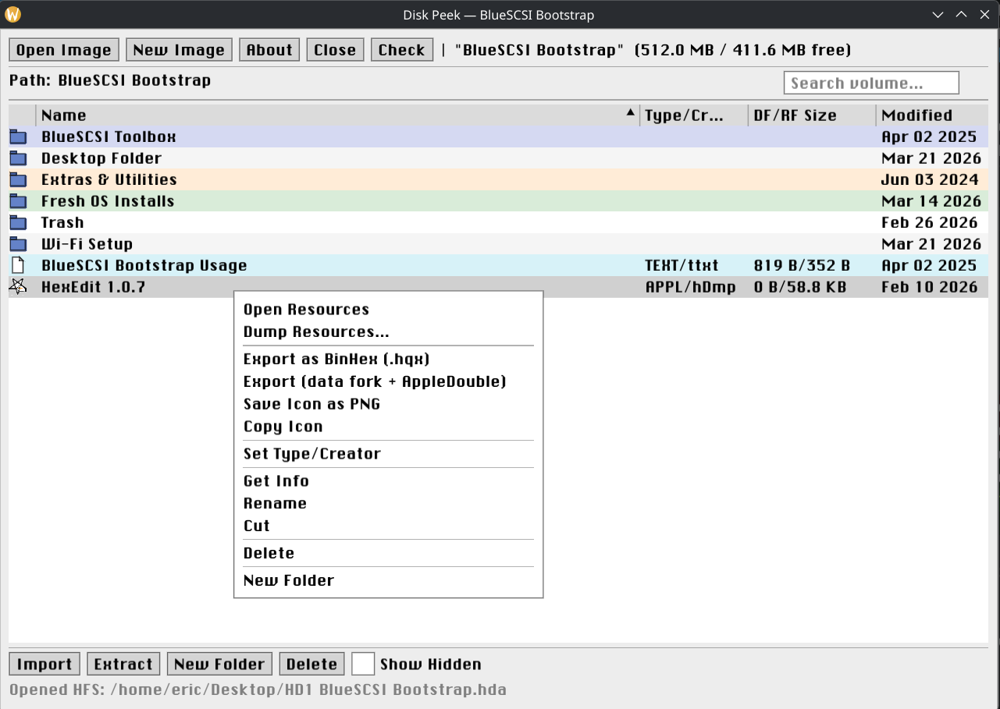

Build and inspect HFS disk images for BlueSCSI and classic Macintosh hardware
Or build from source: meson setup builddir && ninja -C builddir
Works great with BlueSCSI — prepare and inspect disk images for your classic Mac

Open and browse both classic HFS and modern HFS+ disk images with full metadata display.
ResEdit-style resource viewer. Preview icons, images, sounds, text, dialogs, menus, and more.
Runs on Linux, macOS, and Windows. No emulator or classic Mac hardware needed.
Dump all resources to decoded files: PNG for images, WAV for sounds, TXT for strings.
Import, export, rename, delete files. Create folders. Set type/creator codes with auto-detection.
Export with full resource fork preservation via BinHex 4.0 or data fork + AppleDouble.
Built on hfsutils by Robert Leslie, libdmg-hfsplus by planetbeing, resource_dasm & phosg by Martin Michelsen, Dear ImGui by Omar Cornut, and SDL3.
Licensed under GPLv3. Resource decoder libraries under MIT license.